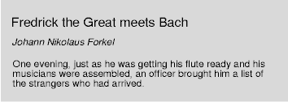

Содержание
В этом пособии мы покажем, как можно
быстро создать простые таблицы стилей.
Для использования этого пособия необходимо
немного знать HTML (см. [HTML40])
и некоторые базовые термины настольных
публикаций.
Вот небольшой документ HTML:
<!DOCTYPE HTML PUBLIC "-//W3C//DTD HTML 4.0//EN">
<HTML>
<HEAD>
<TITLE>Bach's home page</TITLE>
</HEAD>
<BODY>
<H1>Bach's home page</H1>
<P>Johann Sebastian Bach was a prolific composer.
</BODY>
</HTML>
Чтобы установить голубой цвет текста элемента H1, можно написать такое правило CSS:
H1 { color: blue }
Правило CSS состоит из двух главных частей: селектора ('H1') и объявления ('color: blue'). Объявление имеет две части: свойство ('color') и значение ('blue'). Поскольку в предыдущем примере делается попытка использовать только одно из свойств, необходимое для отображения документа HTML, он может быть квалифицирован как таблица стилей. В комбинации с другими таблицами стилей (возможность комбинировать таблицы стилей является одним из фундаментальных свойств CSS) оно (свойство) определит конечный вид документа.
Спецификация HTML 4.0 определяет, как правила таблиц стилей могут быть специфицированы для документов HTML: или внутри документа HTML, или в таблицах стилей. Чтобы поместить в документ таблицу стилей, используйте элемент STYLE:
<!DOCTYPE HTML PUBLIC "-//W3C//DTD HTML 4.0//EN">
<HTML>
<HEAD>
<TITLE>Bach's home page</TITLE>
<STYLE type="text/css">
H1 { color: blue }
</STYLE>
</HEAD>
<BODY>
<H1>Bach's home page</H1>
<P>Johann Sebastian Bach was a prolific composer.
</BODY>
</HTML>
Для максимальной гибкости мы рекомендуем, чтобы авторы специфицировали внешние таблицы стилей; они могут быть изменены без модификации документа-источника HTML, а также могут раздельно использоваться несколькими документами. Чтобы сослаться на внешнюю таблицу стилей, Вы можете использовать элемент LINK:
<!DOCTYPE HTML PUBLIC "-//W3C//DTD HTML 4.0//EN">
<HTML>
<HEAD>
<TITLE>Bach's home page</TITLE>
<LINK rel="stylesheet" href="bach.css" type="text/css">
</HEAD>
<BODY>
<H1>Bach's home page</H1>
<P>Johann Sebastian Bach was a prolific composer.
</BODY>
</HTML>
Элемент LINK специфицирует:
Чтобы продемонстрировать тесную взаимосвязь между таблицей стилей и структурной разметкой, мы продолжим использовать элемент STYLE в этом пособии. Давайте добавим больше цветов:
<!DOCTYPE HTML PUBLIC "-//W3C//DTD HTML 4.0//EN">
<HTML>
<HEAD>
<TITLE>Bach's home page</TITLE>
<STYLE type="text/css">
BODY { color: red }
H1 { color: blue }
</STYLE>
</HEAD>
<BODY>
<H1>Bach's home page</H1>
<P>Johann Sebastian Bach was a prolific composer.
</BODY>
</HTML>
Таблица стилей теперь содержит два правила: первое устанавливает цвет элемента BODY в 'red', а второе - цвет элемента H1 в 'blue'. Поскольку для элемента P не специфицирован цвет, он будет наследовать цвет от своего элемента-предка, а именно - от BODY. Элемент H1 является также дочерним элементом элемента BODY, но второе правило переопределяет наследуемое значение. В CSS часто возникают такие конфликты между различными значениями, и данная спецификация описывает, как их разрешить.
В CSS2 имеется более 100 различных свойств, в
том числе - 'color'.
Рассмотри некоторые другие:
<!DOCTYPE HTML PUBLIC "-//W3C//DTD HTML 4.0//EN">
<HTML>
<HEAD>
<TITLE>Bach's home page</TITLE>
<STYLE type="text/css">
BODY {
font-family: "Gill Sans", sans-serif;
font-size: 12pt;
margin: 3em;
}
</STYLE>
</HEAD>
<BODY>
<H1>Bach's home page</H1>
<P>Johann Sebastian Bach was a prolific composer.
</BODY>
</HTML>
Первое, что нужно отметить, это несколько объявлений, сгруппированных внутри блока, заключённого в фигурные скобки ({...}) и разделённых знаком точка с запятой, хотя последнее объявление может также заканчиваться точкой с запятой.
Первое объявление элемента BODY устанавливает семейство шрифтов "Gill Sans". Если этот шрифт недоступен, ПА (часто называемый "браузер") будет использовать семейство шрифтов 'sans-serif', которое является одним из пяти семейств шрифтов, известных всем ПА. Дочерние элементы элемента BODY унаследуют значение свойства 'font-family'.
Второе объявление устанавливает размер шрифта элемента BODY в 12 пунктов. Единица измерения "пункт" используется обычно в типографской печати для обозначения размеров шрифта и других размеров. Это пример абсолютных единиц измерения, которые не определяются относительно окружения.
Третье объявление использует относительные единицы измерения, которые определяются относительно своего окружения. Единица "em" относится к размеру шрифта элемента. В нашем случае поля вокруг элемента BODY шире размера шрифта в три раза.
CSS может использоваться с любым структурированным форматом документа, например, с приложениями eXtensible Markup Language [XML10]. На самом деле XML намного больше зависит от таблиц стилей, чем HTML, поскольку авторы могут создавать свои собственные элементы, которые не известны ПА и не могут ими выводиться.
Вот простой фрагмент XML:
<ARTICLE>
<HEADLINE>Fredrick the Great meets Bach</HEADLINE>
<AUTHOR>Johann Nikolaus Forkel</AUTHOR>
<PARA>
One evening, just as he was getting his
<INSTRUMENT>flute</INSTRUMENT> ready and his
musicians were assembled, an officer brought him a list of
the strangers who had arrived.
</PARA>
</ARTICLE>
Чтобы вывести данный фрагмент в виде документа, мы обязаны сначала объявить, какие элементы являются элементами инлайн-уровня (т.е. не вызывают разрывов строк) и какие - уровня блока (т.е. вызывают разрывы строк).
INSTRUMENT { display: inline }
ARTICLE, HEADLINE, AUTHOR, PARA { display: block }
Первое правило объявляет INSTRUMENT как инлайн, а второе правило с его списком разделённых запятыми селекторов объявляет все другие элементы как элементы уровня блока.
Одним из вариантов связи таблицы стилей с документом XML является использование инструкций процесса:
<?XML:stylesheet type="text/css" href="bach.css"?>
<ARTICLE>
<HEADLINE>Fredrick the Great meets Bach</HEADLINE>
<AUTHOR>Johann Nikolaus Forkel</AUTHOR>
<PARA>
One evening, just as he was getting his
<INSTRUMENT>flute</INSTRUMENT> ready and his
musicians were assembled, an officer brought him a list of
the strangers who had arrived.
</PARA>
</ARTICLE>
Визуальный ПА может отформатировать вышеприведённый пример так:
Обратите внимание, что слово "flute" остаётся внутри параграфа, поскольку это содержимое инлайн-элемента INSTRUMENT.
Тем не менее, текст ещё не выглядит так, как Вы могли бы ожидать. Например, шрифт заголовка должен быть крупнее, чем остальной текст, и Вам может понадобиться вывести имя автора курсивом:
INSTRUMENT { display: inline }
ARTICLE, HEADLINE, AUTHOR, PARA { display: block }
HEADLINE { font-size: 1.3em }
AUTHOR { font-style: italic }
ARTICLE, HEADLINE, AUTHOR, PARA { margin: 0.5em }
Визуальный ПА может сформатировать этот пример так:
 [D]
Добавление других правил в таблицу стилей позволить Вам сделать представление документа ещё более интересным.
Этот раздел представляет одну из возможных моделей того, как работают ПА, поддерживающие CSS. Это лишь концептуальная модель; конкретные реализации могут варьироваться.
ПА в этой модели обрабатывает источник, выполняя следующие шаги:
Частично расчёт значений зависит от алгоритма форматирования, соответствующего целевому типу носителя. Например, если целевой носитель - это экран, то ПА применяют модель визуального форматирования. Если целевой носитель - это страница для печати, то ПА применяют страничную модель. Если целевой носитель - это устройство звукового вывода (например, речевой синтезатор), то ПА применяют модель звукового представления.
Обратите внимание, что ПА CSS не изменяет дерево документа на этом этапе. И особенно, что содержимое, генерируемое в связи с таблицы стилей, не возвращается процессору языка документа (например, для повторного разбора).
Шаг 1 находится вне пределов действия данной спецификации (см., например, [DOM]).
Шаги 2-5 адресуются основным объёмом данной спецификации.
Шаг 6 находится вне пределов действия данной спецификации.
Для всех носителей термин канва описывает "пространство, где выводится сформатированная структура". Канва бесконечна по каждому измерению, но представление обычно производится в пределах ограниченной области канвы, установленной ПА в соответствии с целевым носителем. Например, вывод ПАгентами на экран обычно требует наличия минимальной ширины и выбора начальной ширины на базе размеров порта просмотра. Вывод ПАгентами на страницу обычно требует ограничения ширины и высоты. Звуковые ПА могут предполагать ограничения звукового пространства, но не времени.
Селекторы и свойства CSS2 позволяют обращаться из таблиц стилей к следующим частям документа или ПАгента:
CSS2, а до них - CSS1, базируются на наборе принципов дизайна:
Совместимость вперёд и обратная. ПА CSS2 понимают таблицы стилей CSS1. ПА CSS1 могут читать таблицы стилей CSS2 и отбрасывать те части, которые они не понимают. Также ПА, не поддерживающие CSS, могут отображать документы со стилями. Конечно, стилистические приёмы, возможные в CSS, не будут выводиться, но всё содержимое будет представлено.
Дополнение структурированных документов. Таблицы стилей дополняют структурированные документы (например, приложения HTML и XML), предоставляя стилистическую информацию для размеченного текста. Должна иметься возможность легко изменять таблицы стилей без или с минимальным влиянием на разметку.
Независимость от изготовителя, платформы и устройства. Таблицы стилей делают возможным создание документов, не зависящих от изготовителя, платформы и устройства. Таблицы стилей сами по себе также не зависят от изготовителя, платформы и устройства, но CSS2 позволяют Вам назначить таблицу стилей группе устройств (например, принтеров).
Удобство обслуживания. Ссылаясь из документа на таблицы стилей, web-мастера могут упростить обслуживание сайта и добиться целостного вида и содержания всего сайта. Например, если изменяется цвет фона сайта организации, нужно будет изменить лишь один файл.
Простота. CSS2 сложнее, чем CSS1, но остаётся простым языком стилей, доступным для чтения и понимания человеком. Свойства CSS не зависят одно от другого, чтобы иметь в будущем возможности для расширения, и поэтому обычно имеется лишь один способ для достижения определённого эффекта.
Скорость работы сети. CSS предоставляют компактные способы представления содержимого. По сравнению с файлами изображений или аудиофайлами, которые часто используются авторами для получения определённых эффектов представления, таблицы стилей чаще всего уменьшают объёмы содержимого. Требуется также меньше сетевых соединений, что увеличивает пропускную способность сети.
Гибкость. CSS может применяться в содержимом разными способами. Ключевым является возможность каскадирования стилевой информации, специфицированной в таблице стилей по умолчанию(в ПА), пользовательских таблицах стилей, связанных таблицах стилей, шапке документа и атрибутах элементов, формирующих тело документа.
Богатство возможностей. Предоставление авторам большого набора эффектов отображения увеличивает разнообразие Web. Дизайнерам была необходима функциональность, которая уже использовалась в настольных приложениях и слайд-презентациях. Некоторые из требуемых эффектов конфликтуют с независимостью от конкретных устройств, но CSS2 явился дальнейшим шагом на пути удовлетворения запросов дизайнеров.
Связи с другими языками. Набор свойств CSS, описанный в этой спецификации, образует последовательную модель форматирования для визуального и звукового представления. Эта модель форматирования может быть доступна из языка CSS, но возможны также связи с другими языками. Например, программа JavaScript может динамически изменить значение свойства 'color' определённого элемента.
Доступность. Некоторые возможности CSS сделают Web более доступным для пользователей с физическими проблемами:
Примечание. За дополнительной информацией о разработке доступных документов с использованием CSS и HTML обратитесь, пожалуйста, на [WAI-PAGEAUTH].